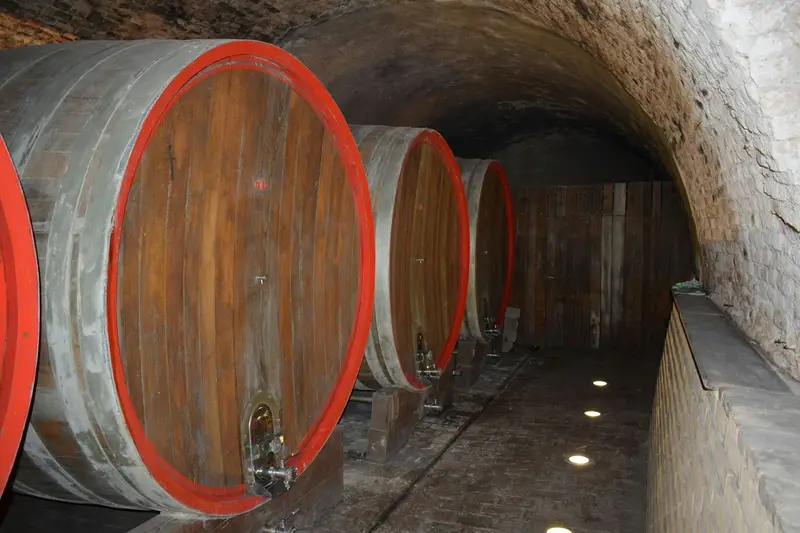
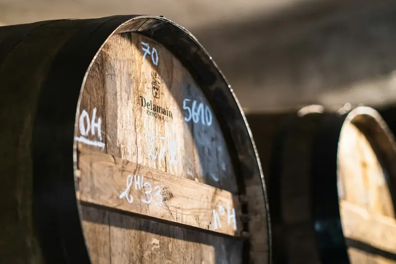
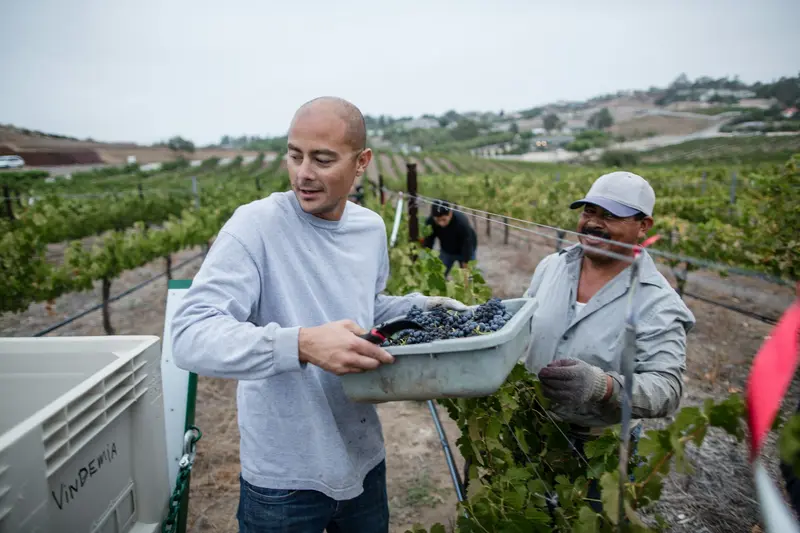

Kapellweg
- Altitude
- 430 m
- Pente
- 45 %
- Sol
- Grès rose des Vosges
- Cépage
- Riesling
Le haut du coteau, le plus frais, au bord de la forêt. Le grès donne des rieslings droits et tendus, qui demandent quelques années de cave.
Riesling KapellwegDomaine Hellwig, Vieux-Thann, Haut-Rhin
Au pied des Vosges, nos vignes tiennent sur une pente volcanique exposée plein sud. Neuf hectares cultivés en bio, vendangés à la main, élevés en foudres.
La route des vins d'Alsace commence à Marlenheim et s'arrête ici, à Thann. Plus au sud, la vigne laisse la place à la forêt. Ce coteau est le dernier, et sans doute le plus raide : on y travaille presque tout à la main, comme nos arrière-grands-parents en 1921.
Anne et Mathis Hellwig, quatrième génération
Faites défiler : le cadran avance d'un mois à chaque pas.
Chaque cep est taillé à la main. On ne garde qu'un ou deux bois : c'est là que se décide la récolte de l'automne.
Les sarments coupés sont tirés hors des fils, puis broyés entre les rangs pour nourrir le sol.
Les bois gardés sont courbés en arc et attachés au fil. La sève remonte : la vigne « pleure » aux plaies de taille.
Les bourgeons s'ouvrent. On surveille le thermomètre la nuit : une seule gelée peut coûter une partie de la récolte.
On retire à la main les pousses en trop pour aérer la vigne. Entre les rangs, l'herbe et les fleurs restent.
Pendant une dizaine de jours, la fleur de vigne embaume le coteau. Le nombre de raisins se joue là.
Les rameaux sont relevés entre les fils et rognés au sommet. Les grappes grossissent à l'ombre des feuilles.
Le raisin change de couleur et se charge en sucre. On goûte les baies, rang par rang, pour fixer la date des vendanges.
Tout est cueilli à la main, en caissettes, parcelle par parcelle. Le crémant ouvre la marche, le gewurztraminer la ferme.
Les raisins sont pressés entiers, lentement. Les jus fermentent dans nos foudres, sans levures ajoutées.
Les années où l'automne le permet, quelques rangs attendent la surmaturité. Les feuilles tombent, le coteau devient or.
Les vins reposent sur leurs lies jusqu'au printemps. Le caveau reste ouvert pour vos commandes de fin d'année.
Entre 300 et 430 mètres d'altitude, le sol change trois fois. Chaque parcelle a son cépage, et chaque cépage sa cuvée.
Le haut du coteau, le plus frais, au bord de la forêt. Le grès donne des rieslings droits et tendus, qui demandent quelques années de cave.
Riesling KapellwegLe cœur du coteau, si raide qu'on y monte à pied, caissettes à l'épaule. La roche sombre garde la chaleur et donne aux vins leurs notes fumées.
Pinot gris et gewurztraminer SteinackerLe pied du coteau, où le sol est plus profond. C'est là que poussent le pinot noir et les raisins du crémant.
Pinot noir et crémant SonnenrainPrix au caveau, par bouteille de 75 cl. Ajoutez des bouteilles à votre commande : on vous rappelle pour le retrait ou la livraison.
L'abus d'alcool est dangereux pour la santé, à consommer avec modération.
Pinot blanc, auxerrois et chardonnay du Sonnenrain
Bulles fines, pomme verte, brioche légère. Pour l'apéritif et les tartes flambées.
Brut
13,50 €
Riesling sur grès rose, à 430 m
Citron, pierre mouillée, finale saline. Avec les poissons de rivière et la choucroute.
Sec
17 €
Pinot gris sur roches volcaniques, à 370 m
Poire mûre, notes fumées, bouche ample. Avec une volaille à la crème ou un munster affiné.
Demi-sec
21 €
Gewurztraminer sur roches volcaniques, à 370 m
Rose, litchi, épices douces. Avec la cuisine épicée ou un dessert aux fruits jaunes.
Moelleux
22 €
Pinot noir du Sonnenrain, élevé douze mois en fût
Cerise noire, sous-bois, tanins fins. Avec le gibier ou le baeckeoffe.
Rouge, sec
24 €
Riesling surmûri du Kapellweg, en bouteille de 50 cl
Coing, miel, belle acidité. Avec le foie gras ou un fromage persillé.
Doux
39 €


Nos vins fermentent et s'élèvent dans les foudres de chêne que l'arrière-grand-père a fait installer dans la cave voûtée. Ils sont lents, et c'est ce qu'on leur demande : des fermentations de plusieurs semaines, puis de longs mois sur lies fines.

« Sur ce coteau, on ne peut pas tricher : quand l'année est difficile, ça se goûte. Alors on y passe le temps qu'il faut. »
Anne s'occupe de la cave et du caveau, Mathis de la vigne. Le domaine est passé en agriculture biologique en 2012 ; les vendanges se font avec une équipe de saisonniers qui revient d'année en année.
Gratuite, sans rendez-vous
Toute la gamme est ouverte à la dégustation. Du lundi au samedi, de 9 h à 12 h et de 14 h à 18 h 30.
12 € par personne, offerte dès 6 bouteilles
Une heure et demie dans la vigne et la cave, puis six vins à la dégustation. Le samedi à 10 h 30 et à 15 h, de 2 à 12 personnes.
4 chemin des Vignerons, 68800 Vieux-Thann
À 10 minutes à pied de la gare de Thann. Parking devant le caveau.
Votre commande est vide. Ajoutez des bouteilles depuis la liste des vins.